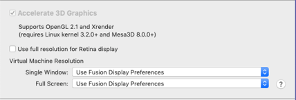

Common Errors
Hardware
"The host supports Intel VT-x, but Intel VT-x is disabled"
One reason starting the virtual machine may fail is having Intel VT-x disabled. If this is the case, you will see an error message about "The host supports Intel VT-x, but Intel VT-x is disabled". VT-x has to be enabled in your system BIOS, which slightly differs from system to system. You may need the instructor's help to find out how to fix this.
Newer Systems (UEFI, not traditional BIOS)
-
Hold the SHIFT key while restarting your Windows System.
-
The system will restart and end up on a blue screen with various options. Select "Troubleshoot".
-
From the "Troubleshoot" menu, select "Advanced Options".
-
Select "UEFI Firmware Settings".
-
Select "Restart".
-
The system will restart again and give you the option to change your BIOS settings, usually by pressing F10. But watch the startup screen carefully for instructions.
-
Continue at Step 3 below.
Older System (traditional BIOS, not UEFI)
-
Reboot the system.
-
During boot, watch for which key to use to enter the BIOS settings. Common keys include F1, F10, and Delete.
-
Once in the BIOS settings, look for "Virtualization Technology", "VT-x", or similar options and enable them. You can often find them on the "System Configuration" or "Security" page.
-
Exit and save your changes.
The exact wording and instructions may change from system to system. You will need to have access to your BIOS settings. Some corporate configurations password-protect the settings. You will need to obtain the password to change them.
High-Resolution Screens
Some modern laptops use very high-resolution screens ("Retina Screens"). This can lead to hard-to-read fonts within the virtual machine. The simplest way to make the screen readable is by reducing the resolution of your screen in Windows, which will essentially turn off the high-resolution feature.
Apple laptops with high-resolution screens running MacOS and VMware Fusion do not suffer from this problem. If you do experience the issue, double-check your display settings:
-
Select "Virtual Machine" -> "Settings..." from the VMware Fusion menu.
-
Select "Display".
-
Verify that your settings match the settings in the image below.

VMware Fusion Display Settings
Windows
Windows Credential/Device Guard
With Windows Credential Guard enabled, Windows will run in a Hyper-V virtual machine. This isn't obvious but will prevent VMware from running (VMware cannot run inside a virtual machine). You will see an error like:
VMware Workstation and Device/Credential Guard are not compatible. VMware Workstation can be run after disabling Device/Credential Guard.
To disable credential guard, follow these steps (copied from Microsoft's knowledge base article at https://docs.microsoft.com/en-us/windows/security/identity-protection/credential-guard/credential-guard-manage.
-
From the Group Policy Management Console, go to "Computer Configuration" -> "Administrative Templates" -> System -> "Device Guard".
-
Double-click "Turn On Virtualization Based Security", and then click the "Enabled" option.
-
In the Select Platform Security Level box, choose "Secure Boot" or "Secure Boot and DMA Protection".
-
In the Credential Guard Configuration box, click "Enabled with UEFI lock", and then click OK.
-
Close the Group Policy Management Console.
To enforce processing of the group policy, you can run
gpupdate /force.
Linux Cheat Sheet
To navigate the virtual machine, you will need some basic Linux skills.
The main user used for most exercises is "sec522". Dev522's home directory is /home/sec522.
To open a terminal, click on the Terminal icon on the left. This area on the left is also referred to as the "Favorites" area.
-
Terminal Icon
Once a terminal opens, you may navigate directories using the "cd" command.
To edit a file, you can just use "gedit" followed by the filename. For example,
gedit /tmp/testing.txtwill edit the file "testing.txt" in the /tmp directory. Gedit is similar to Windows Notepad.
For a more full-featured editor, we have Microsoft's Visual Studio Code available. You can start it by typing "code" on the command line, or by clicking on the icon on the left.
-
Microsoft Visual Studio Code Icon